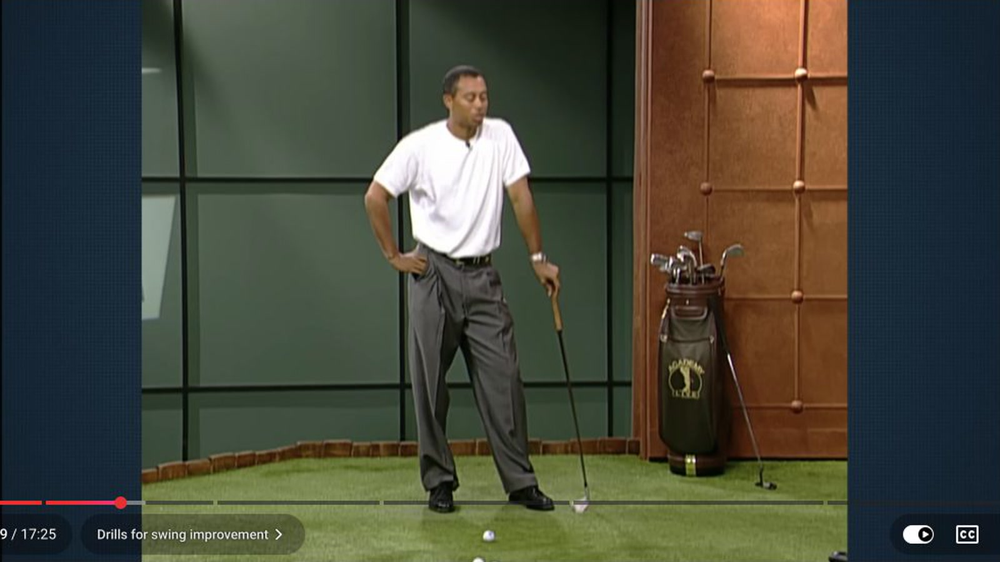
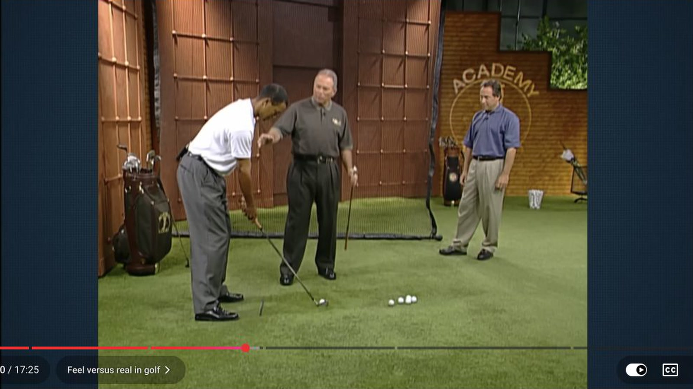
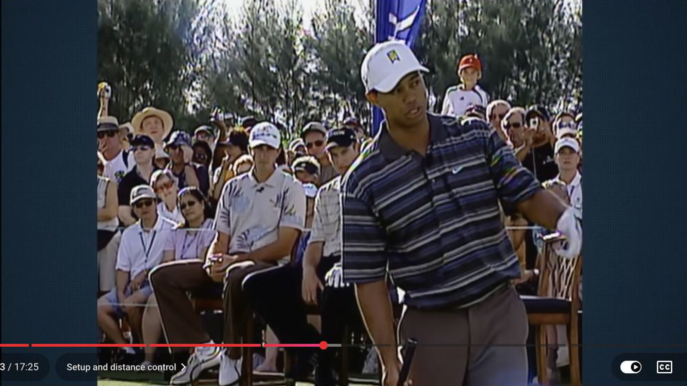
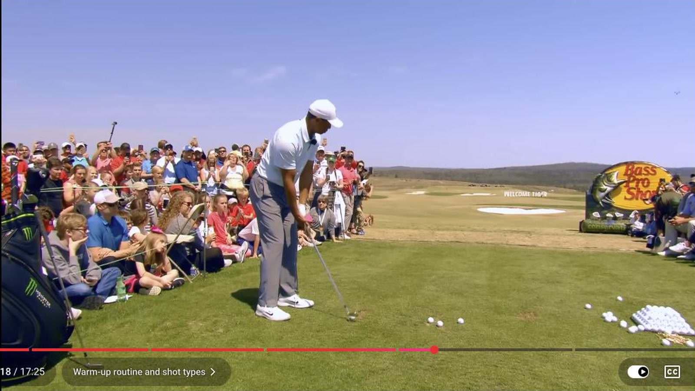
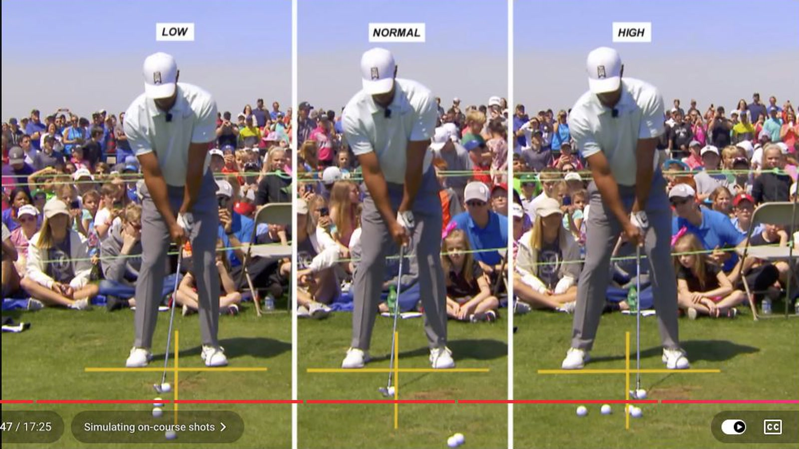

Executive summary
Tiger separates mechanical training from shot making
When changing technique, Tiger slows the motion down and exaggerates a feel until the club can arrive in a new sequence. The hated pause-at-the-top drill removes momentum, so he cannot rescue the swing with speed. He spent more than a year and thousands of balls making the rebuilt pattern trustworthy.
When preparing to play, the process changes. He warms through the bag, observes the day's pattern, then hits curves and trajectories with specific targets. Distance changes through speed. Flight changes through small ball-position and finish-height cues. The mechanical work creates options, while the playing work chooses among them.
Source boundary. This is a modern reupload that edits several older clinics and broadcasts together. The upload does not identify every original recording or date. This article treats the compilation as the primary transcript while labeling independently verified segments and avoiding a false single-session timeline.
Provenance map
The compilation joins different lessons from different stages of Tiger's career
| Compilation time | Visible context | Topic | What can be verified |
|---|---|---|---|
| 0:00–7:25 | Studio lesson with Butch Harmon and a host | Post-1997 swing rebuild, the pause drill, feel versus real, posture and setup | Independent coverage identifies the drill and Tiger's 1997 rebuild under Harmon. The exact broadcast date is not established by the reupload. |
| 7:25–9:25 | Separate instructional segment | Flighted irons, follow-through height, speed control and the 7-iron distance window | The compilation supplies the teaching. The original program is not clearly credited. |
| 9:25–17:25 | Outdoor clinic and range demonstration | Tournament warm-up, shot shapes, low and high trajectories, and playful target practice | Secondary coverage documents the Tiger Woods and Anthony Kim clinic and the same KISS trajectory explanation. |
The swing rebuild
Control required giving up distance that Tiger could still call upon
Tiger lists a weaker lead-hand grip, narrower stance, earlier wrist set, a higher right arm, a flatter lead arm at the top, and hands that fall in front of the body. He also describes a slightly bowed lead wrist and shorter follow-through. The changes aim to keep the club from dropping too far behind him.
His junior pattern used a fast hip turn and a club delivered from well inside. It produced speed, but under pressure the club could become trapped and require a flip. The rebuilt stock driver travels roughly 10 to 15 yards shorter than his 1996 version. Tiger still says he can add about 20 yards when needed. He has not lost the speed option. He has stopped paying its accuracy cost on every tee shot.
Physical development supports the new pattern. The discussion places his body weight at 158 pounds when he joined the tour and about 180 pounds later. Strength gives him more capacity to stabilize the positions and sequence the coach wants.
The drill he hated
Stopping at the top removes the momentum that hides sequencing errors
The drill is simple to describe and difficult to execute. Tiger takes the club to the top, stops completely, then starts down and hits the ball. Without continuous motion, he cannot use speed to disguise where the arms and club are located.
The intended sensation is that the arms fall in front as pressure transfers. Tiger had spent years firing his hips early, leaving the arms behind. To counter that history, he feels as if his arms beat his body to the ball and his hips barely move. The video shows that this is an exaggeration, not the literal impact position.

The workload is part of the lesson. Tiger says the pattern took more than a year and thousands of balls to trust. A recreational golfer should scale the volume, but not expect a 30-minute lesson to become automatic without deliberate repetitions and feedback.
Feel versus real
A useful feel can be mechanically inaccurate
Butch Harmon warns that Tiger's arms-first feel would be poor literal advice for many golfers. A player who already leaves the body behind could turn it into a hand throw. Tiger needs the opposite sensation because his hips historically outran his arms.
This is the most important safeguard in the compilation. A feel is a private correction to a specific error. Video, ball flight, strike, and coaching establish what the body actually did. The strength of the feel is whether it changes the measured result, not whether its words sound biomechanically correct.
The same principle appears in Tiger's day-to-day shot selection. Some days he feels a cut. On another day he may close his stance even though the adjustment sounds opposite to the desired flight. He responds to what his hands, body, and ball are doing that day.
Setup before motion
Posture can create the swing error before the club moves
Tiger and Harmon repeatedly work on spine angle, chin position, grip, and ball position. When Tiger slumps, his head drops and he runs out of room for the shoulder turn. The club then tends to move inside and his body must rise to reach the ball.
With a taller posture and space between chin and chest, the trail shoulder can turn under the chin. The lesson is diagnostic: before changing the downswing, check whether the address position forces the unwanted compensation.

Distance and flight
The same club becomes many clubs through speed and finish
Tiger says he can hit a 7-iron from roughly 120 to 200 yards. The variable is speed. He practices moving a target progressively farther while using the same club, learning how body and arm speed map to carry.
For flatter shots, he often keeps ball position close to normal and cuts off the follow-through. The glove emblem feels as if it stays toward the target, and the hands finish around or below shoulder height. The shorter finish lets him remain aggressive without lunging toward the target and adding a weak, high spinner.

Tournament warm-up
The range session moves from temperature to information
Tiger describes a structured club sequence: sand wedge, 8-iron, 4-iron, either 2-iron or 5-wood, 3-wood, driver, back to 8-iron, then 60°, followed by the club needed on the first tee.
His first three balls have no directional target. They warm the body. After that, he introduces a draw and a cut, then tests different shapes and heights through the longer clubs. The goal is not to manufacture a perfect swing before the round. It is to learn what the body and ball are offering that day.

The KISS trajectory system
Three ball positions and three finish heights create a usable flight ladder
Tiger attributes the simple framework to his father. The normal ball marks the everyday flight. One ball back supports the low shot. One ball forward supports the high shot. The corresponding finish feel is rib-cage height for low, a normal shoulder-area finish for stock, and hands over the head for high.
The cue is deliberately simple because it must survive pressure. It also scales beyond one club. In the clinic, Tiger demonstrates low and high long shots, curves, and exaggerated targets while preserving a clear relationship among ball position, finish, and intended window.

Practice design
A practical version of Tiger's system
- Define one measured error. Use video, strike location, and ball flight to identify what needs changing. Do not borrow a professional's feel without matching the problem.
- Build a drill that removes the escape. Slow the motion, pause, or reduce speed until momentum cannot hide the sequence. Keep the task small enough to judge each repetition.
- Separate training from playing. Mechanical repetitions belong in a training block. Target, curve, carry, and safe miss belong in a performance block.
- Calibrate one club across distance. Use a mid-iron or wedge and map several carries by changing speed before adding many technical cues.
- Build three trajectory windows. Test back, normal, and forward ball positions with low, stock, and high finish feels. Record actual carry and curve rather than trusting appearance.
- End with the first-tee shot. Finish practice with the club, shape, and target required for the opening hole so warm-up connects directly to play.
My take
The sophistication is in the feedback loop, not the number of swing thoughts
Tiger's explanations sound simple because the complexity has already been absorbed through training. Rib-high finish, arms first, or one ball back are compact controls attached to thousands of observed shots. They work because he knows what each cue changes in his pattern.
The correct lesson is not to collect his phrases. It is to build the same loop: observe the miss, choose a feel that changes it, verify the real motion, map the resulting ball flight, and simplify the final cue until it can survive the course.
Sources and method
What this article is based on
- Sonic Titan Golf · Tiger Woods Blesses Us With 17 Minutes of Golf Wisdom. Primary transcript and visual source, presented as a compilation rather than original footage.
- Golf365 · The brutal Butch Harmon drill Tiger Woods hated. Used to confirm the pause drill and its connection to the post-1997 rebuild.
- GOLF.com · Tiger Woods and Anthony Kim clinic. Used to confirm the outdoor clinic context and KISS trajectory lesson.
Method: 431 public English-caption rows were reviewed across the full 17:25 compilation. Six direct frames were captured at 1600x900. The reupload's date and channel are not presented as the dates or owners of the archival footage.